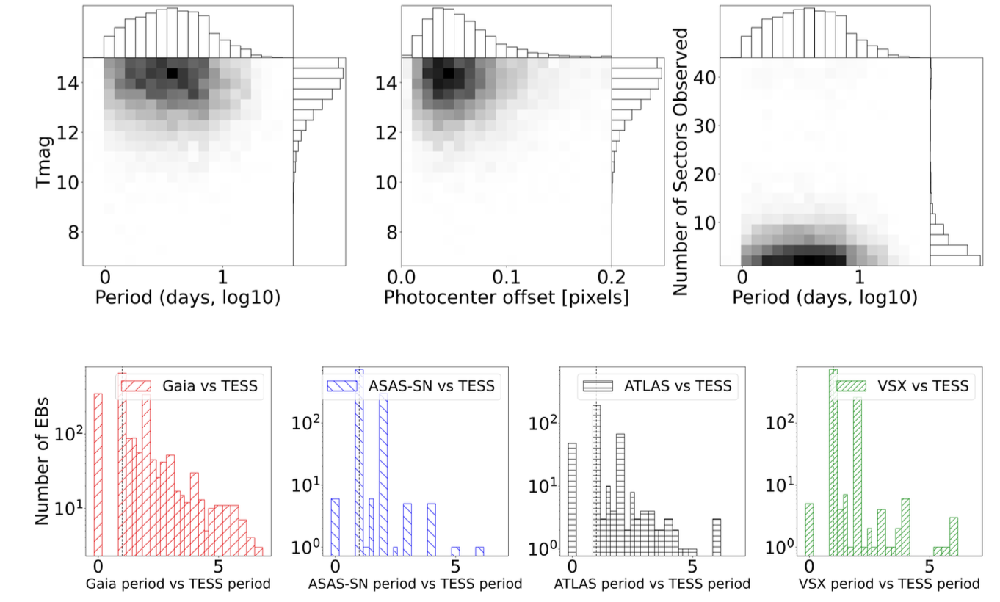
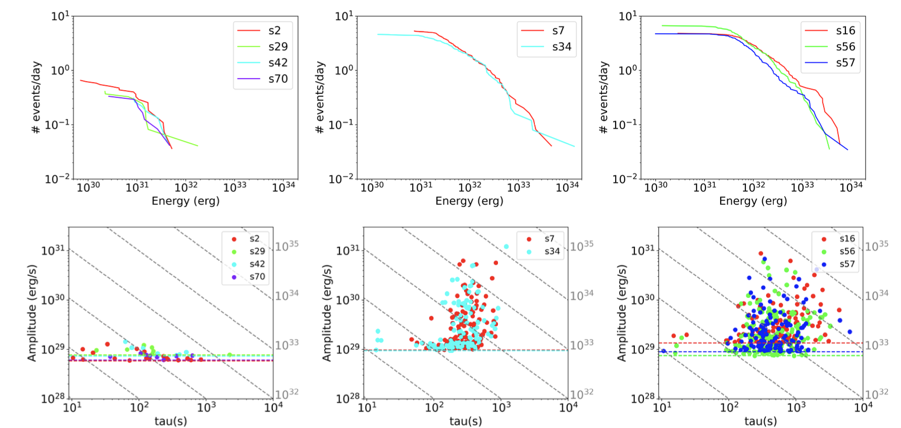
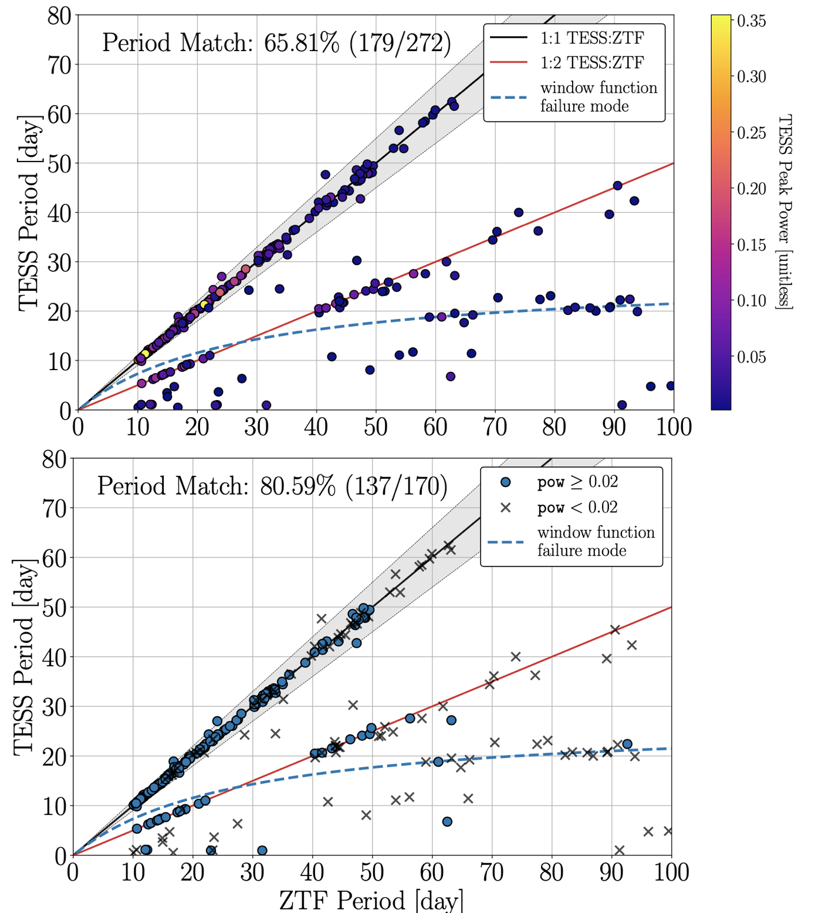

Welcome TESS followers to our latest news bulletin!
This week, we are looking at three recent papers from the archive . Enjoy!
First, we highlight a catalog of ten thousand uniformly-vetted and -validated eclipsing binary stars observed by TESS. Eclipsing binaries are one of the building blocks of stellar astrophysics as fundamental calibrators for the masses, sizes, and temperature of stars. TESS is well-positioned to monitor a large number of these important systems, and creates an exceptional opportunity to systematically discover and characterize a large number of new eclipsing binary stars.
Next, we outline a paper examining stellar flares in M dwarf stars and understanding how these e nergetic outbursts impact planetary atmospheres through intense radiation. These sudden energy releases can significantly alter circumstellar environments, especially close to the star where the habitable zones of M dwarfs lie. Planets residing in these zones thus face substantial exposure to flare-driven radiation that can reshape atmospheric chemistry, making such studies important for habitability considerations of M dwarfs.
The third paper investigates the potential for measuring stellar rotation periods longer than ~10 days using data from TESS. Stellar rotation periods are crucial for understanding stellar evolution, magnetic activity, age determination through gyrochronology, and even exoplanet characterization. Overall, most TESS-derived rotation periods have been limited to ~13.7 days due to systematic effects, making robust measurements of longer-period signals an important contribution to the field.
The TESS Ten Thousand Catalog: 10,001 uniformly-vetted and -validated Eclipsing Binary Stars detected in Full-Frame Image data by machine learning and analyzed by citizen scientists (Kostov et al. 2025) :
Kostov et al. (2025) present a comprehensive catalog of uniformly-vetted and -validated eclipsing binary stars observed by TESS. The authors leveraged advanced machine learning methods to efficiently sift through hundreds of millions of targets and identify hundreds of thousands of promising candidates. This pre-selection process was then complemented by meticulous human scrutiny that enabled detailed analysis of the most interesting systems. This two-tiered approach combined the scalability of artificial intelligence with the nuanced judgment of human expertise, ensuring a thorough and discerning examination of the data. The initial neural network search of Kostov et al. (2025) produced ~1.2 million candidates, of which ~60,000 were selected for detailed analysis including automated ephemeris determination and photocenter measurements to distinguish genuine on-target eclipses from contamination by nearby sources. Comprehensive validation involved ~1,800 citizen scientists through the Eclipsing Binary Patrol project, who collectively produced ~320,000 classifications. The final catalog presented by the authors contains 10,001 validated eclipsing binary systems, including 7,936 newly discovered systems and 2,065 previously known systems with corrected orbital periods. Kostov et al. (2025) note that Gaia astrometric data suggests that about one in four of the new systems may have unresolved stellar companions, indicating many could be components of higher-order multiple star systems. For previously catalogued systems, the superior temporal baseline and precision of TESS observations enabled detection of shallow secondary eclipses and correction of period measurements that were often integer fractions of the true values in existing databases. Additionally, the authors identified numerous systems exhibiting interesting phenomena including eclipse timing variations, orbital precession effects, stellar variability from rotation and pulsation, and even eclipsing multiple stellar systems. This comprehensive survey demonstrates the power of combining machine learning techniques with citizen science efforts to extract maximum scientific value from large astronomical datasets. The catalog of Kostov et al. (2025) provides a substantial resource for follow-up studies of stellar physics, binary evolution, and the search for circumbinary planets, while the methodology establishes a framework for systematic discovery efforts in future space-based photometric missions. The authors also released nearly 900,000 additional unvalidated eclipsing binary candidates for community use, representing a significant expansion of such systems potentially accessible for detailed characterization.
This work has also been highlighted in the NASA feature - "NASA Citizen Scientists Find New Eclipsing Binary Stars".
Exploring short-term stellar activity in M dwarfs: A volume-limited perspective (Galletta et al. 2025) :
Galletta et al. (2025) present a detailed study of short-term stellar activity of nearby M dwarfs observed by TESS. For their target selection, the authors leveraged Gaia DR3 data to identify a volume-limited sample of 173 M dwarf stars within 10 parsecs of the Sun, ensuring an unbiased representation of the local stellar neighborhood population. Capitalizing on TESS data, Galletta et al. (2025) analyzed 751 individual sectors to capture comprehensive flare activity across multiple observation periods. The authors utilized advanced iterative Gaussian process fitting techniques to effectively remove long-term stellar variability and identify flare events. Their comprehensive analysis led to the detection of 17,229 individual flares distributed across all observed stellar targets. Individual TESS sectors exhibited up to 76 flare events, demonstrating remarkable variation in stellar activity levels. The authors report minimum detected flare energies of ~10^29 ergs, with corresponding durations spanning several orders of magnitude, ranging from seconds to hours. Galletta et al. (2025) performed cumulative energy distribution modeling using power-law fitting to reveal that the average slopes are about -0.79 for single-slope and -1.23 for double-slope models, respectively. Additionally, the authors present an in-depth investigation of three representative targets that effectively illustrate the significant diversity in flare behavior patterns, namely BD-156290, YZ CMi, and EV Lac – all with similar bolometric luminosity. Of these, Galletta et al. (2025) note that BD-156290 is the least active, remaining relatively quiet with less than 10 flares per sector. In comparison, YZ CMi demonstrated moderate flare activity, producing on average about 20 flare events per sector. EV Lac is the most active of the three, displaying exceptionally high activity levels with forty or more flares per sector. In addition, the authors note that despite possessing similar bolometric luminosities, the three stars exhibited different flare energy characteristics. Overall, the more active the target, the flatter the cumulative energy distributions, with slopes of -0.79 / -0.92 / -1.32 for EV Lac / YZ CMi / BD-156290, respectively, and corresponding energy breaks of 1.16x10^31 erg / 8.56x10^32 erg / 5.60x10^31 erg. Galletta et al. (2025) argue that these patterns suggest that highly active stars possess stronger and more complex magnetic field configurations, which can store substantially larger amounts of energy before releasing it through flare events. Thanks to TESS, the authors were able to define a flare energy index that reveals two distinct stellar population groups within the sample. Specifically, fainter stellar systems predominantly produced fewer but substantially more energetic flares with characteristically flatter distribution slopes whereas brighter stars typically generated more frequent but individually less energetic flares with steeper slopes.
Measuring Long Stellar Rotation Periods (>10 days) from TESS FFI Light Curves is Possible: An Investigation Using TESS and ZTF (Hattori et al. 2025) :
Hattori et al. (2025) present a comprehensive investigation of stellar rotation in K and M dwarfs on timescales of 10 days and longer. The authors selected a sample of targets monitored by TESS in the continuous viewing zone of Cycle 2, covering approximately one year of continuous observations. As reference, Hattori et al. (2025) identified targets observed by the Zwicky Transient Facility (ZTF) ground-based survey, leveraging 6+ years of observational baseline and establishing ``ground truth’’ rotation periods for comparison. The authors started with an initial sample of 7804 potential targets from the TESS Candidate Target List with Teff between 2000 K and 5300 K, Gaia magnitudes between 13 and 16, contamination ratio smaller than 0.5, identified as dwarfs, and having a renormalized unit weight error smaller than 1.4. Next, Hattori et al. (2025) applied strict quality cuts based on ZTF measurements (period, maximum power, SNR) to select a reference set of 272 stars with reliable ZTF-measured periods longer than 10 days. To process the TESS data, the authors employed a linear regression-based pipeline designed to remove systematic effects from full-frame image light curves while preserving stellar variability signals. Additionally, Hattori et al. (2025) developed a modified Lomb-Scargle periodogram that accounts for flux offsets between different observing sectors, addressing a key challenge in measuring long periods from multi-sector TESS observations, and enabling the detection of periodic signals that span multiple 27-day sectors. Overall, the authors achieved a ~66% success rate in recovering matching periods between TESS and ZTF measurements, with 179 out of 272 sources showing agreement within 10%. Furthermore, for a quality threshold based on TESS Lomb-Scargle power exceeding 0.02, Hattori et al. (2025) report that the success rate improved to ~81 percent for the remaining 170 sources for periods in the range of 10-50 days. The authors note that among the 93 non-matching cases, approximately half (43 sources) showed TESS periods at half the ZTF value, representing a common failure mode where the periodogram detects higher harmonics instead of the fundamental frequency. Overall, Hattori et al. (2025) note that most successful period matches occurred in the 10 to 30-day range, though several longer-period detections validated the approach for slow rotators that are typically underrepresented in astronomical surveys; one notable example shows matching periods of ~50 days between both surveys, proving the capability of the author’s method for relatively long-period detection. Capitalizing on TESS data, this work opens new possibilities for studying stellar evolution in slow-rotating stars and could significantly expand the sample of long-period rotators available for astrophysical research. The techniques developed by the authors demonstrate the untapped potential of TESS's continuous viewing for investigating stellar properties that require extended observational baselines, potentially leading to new insights into stellar magnetic dynamos and age-rotation relationships in cool dwarf stars.

Fig. 1: *Taken from Kostov et al. (2025). Upper panels: distributions of TESS magnitudes, measured center-of-light offsets, and number of sectors observed for ~8,000 new eclipsing binaries detected from TESS. Lower panels: Comparison between the correct periods measured from TESS and those from Gaia, ASAS-SN, ATLAS, and VSX for ~3,000 known eclipsing binaries. *

Fig. 2: Taken from Galletta et al. (2025). Upper panels: cumulative flare events per day detected from TESS for BD-156290 (left), YZ CMi (middle) and EV Lac (right panel). Lower panels: corresponding flare amplitudes vs flare duration.

Fig. 3: Taken from Hattori et al. (2025). Upper panel: Comparison between rotation periods measured from TESS and from ZTF. The black/red lines represent the 1:1/1:2 ratio, respectively. Lower panel: same as upper panel but for Lomb Scargle power threshold > 0.02.